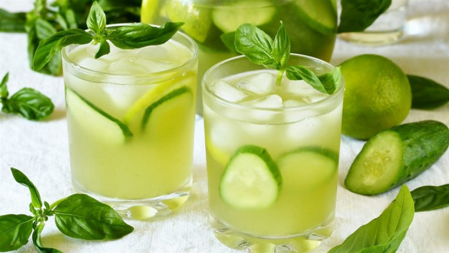

August 18, 2020 Thời gian :
Bí quyết trong để có cách làm sinh tố giảm cân hiệu quả
Có thể thấy, các công thức làm sinh tố giảm cân đều rất đơn giản và dễ thực hiện. Tuy nhiên, để có thể tạo được hương vị sinh tố thơm ngon mà vẫn giàu dinh dưỡng, bạn nên chú ý:
3 cách làm sinh tố giảm cân đơn giản, hiệu quả tại nhà
Giảm cân nhưng vẫn đầy đủ dinh dưỡng không có gì tuyệt vời hơn chính là sinh tố. 3 món sinh tố dưới đây sẽ giúp bạn có được hành trình giảm cân không quá “khắc nghiệt” mà vẫn hiệu quả đấy!
Công thức sinh tố giảm cân từ táo và cần tây
Công thức sinh tố giảm cân với rau cần tây và táo chứa rất nhiều vitamin và khoáng chất. Không những vậy, hàm lượng chất xơ có trong cần tây cũng rất tốt cho sức khỏe lại ít calo. Vì vậy, 1 ly sinh tố cần tây mỗi ngày có thể giúp bạn đốt cháy mỡ thừa và giữ được vóc dáng mảnh mai.
Cần tây không quá khó uống như nhiều người vẫn thường nghĩ.Công thức làm sinh tố giảm cân từ cần tây được bật mí như sau:
– Bước 1: Tiến hành chuẩn bị và sơ chế nguyên liệu bao gồm:
+ Cần tây: khoảng 1 – 2 cây
+ Táo xanh:1 trái
+ Khoảng 150 ml nước lọc.
Sau khi có đủ nguyên liệu bạn đem rửa sạch. Để đảm bảo an toàn cho sức khỏe có thể ngâm cần tây và táo với một chút nước muối. Sau khoảng 10 phút, bạn vớt ra để ráo rồi cắt thành miếng nhỏ, riêng cần tây chỉ lấy phần cọng cứng.
Bước 2: Cho cần tây và táo vào máy xay sau đó xay thật nhuyễn với khoảng 150ml nước.
Bước 3: Cho sinh tố ra ly và thưởng thức thôi nào!
Sinh tố chanh và dưa leo
Dưa leo và chanh đều là các nguyên liệu quen thuộc trong nhiều công thức làm đẹp. Lần này, bạn có thể sử dụng những loại trái cây này để giảm cân một cách triệt để. Với thành phần giàu khoáng chất và các vitamin. Cách làm sinh tố giảm cân với dưa leo, chanh sẽ giúp đốt cháy mỡ thừa và thanh lọc cơ thể. Nó cũng giúp da bạn căng mịn, trẻ trung hơn.
Cách thức thực hiện như sau:
Bước 1: bạn tiến hành chuẩn bị nguyên liệu với 2 quả dưa leo, khoảng 1/3 quả chanh.
Bước 2: dưa leo đem rửa sạch sau đó đem ngâm với nước muối. Sau khoảng 10 phút bạn có thể đem gọt vỏ và cắt thành miếng nhỏ.
Bước 3: Đem xay nhuyễn dưa cùng với khoảng 120ml nước lọc.
Bước 4: Cuối cùng, bạn cho sinh tố ra ly, thêm nước cốt chanh là hoàn thành rồi đấy!
Công thức làm sinh tố cà chua :
Cà chua vốn là loại trái cây rất giàu chất xơ, ít đường và ít calo. Vì vậy, việc uống một ly sinh tố với cà chua thực sự rất lý tưởng để bạn giữ dáng, làm đẹp da hiệu quả.
Cách làm sinh tố giảm cân được bật mí như sau:
Bước 1: Cà chua mua về bạn đem rửa sạch sau đó cho vào nồi luộc khoảng 2-3 phút. Sau đó, bạn vớt và và để nguội thì bóc vỏ. Chú ý bạn chỉ giữ lại phần thịt bên trong rồi cắt thành từng miếng nhỏ hoặc thái hạt lựu.
Bước 2: Cho cà chua vào máy xay sau đó xay nhuyễn cùng 130ml nước.
Bước 3: Thành quả đã xong, bạn chỉ cần đổ sinh tố ra ly và thưởng thức.
Hi vọng rằng với những bật mí về cách làm sinh tố giảm cân dưới đây sẽ giúp bạn có được vóc dáng thon gọn mơ ước. Hành trình giảm cân sẽ không dễ dàng. Tuy nhiên, nó luôn cực “ngọt ngào” cho những ai biết nỗ lực. Hãy cố gắng lên bạn nhé!